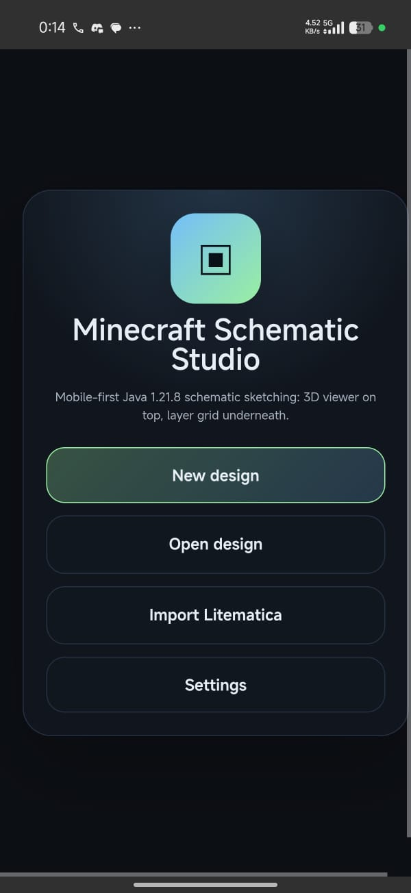
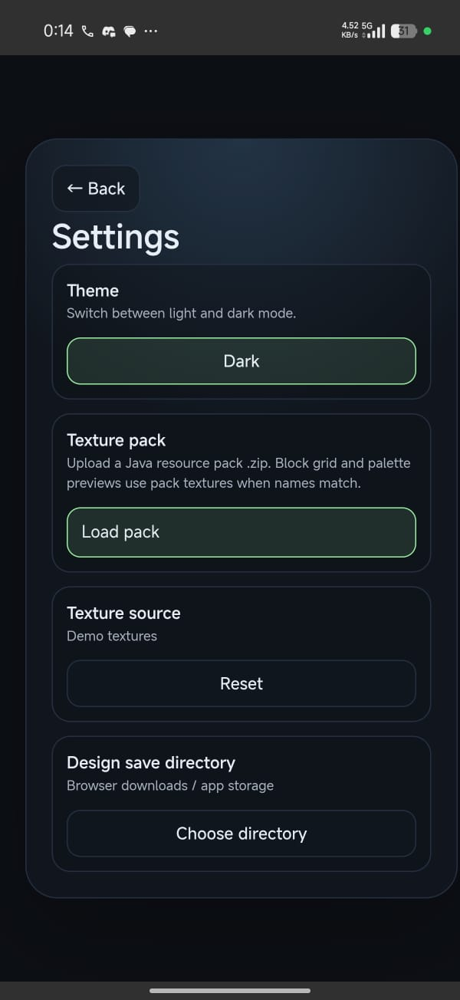
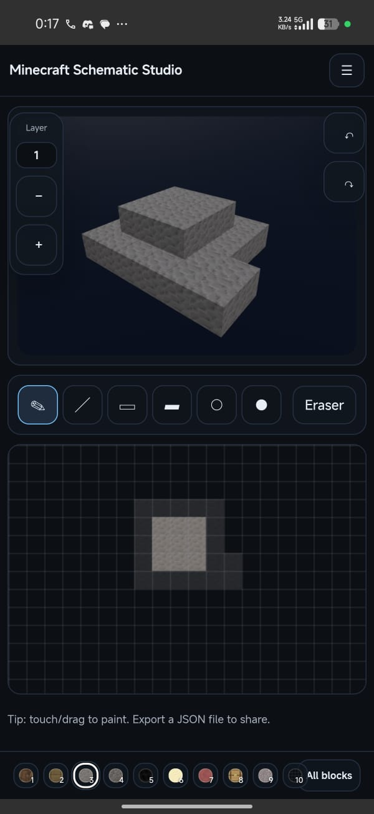
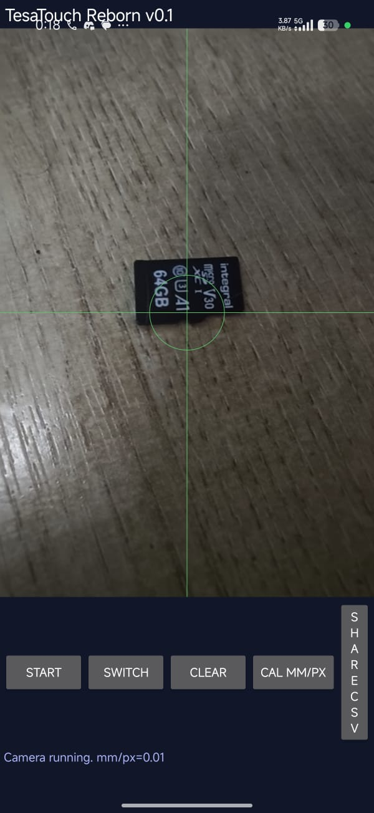
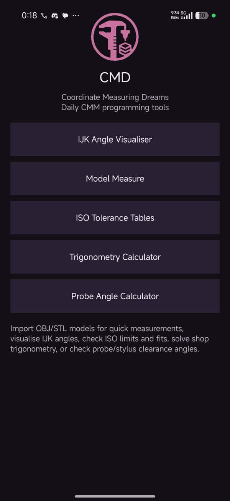
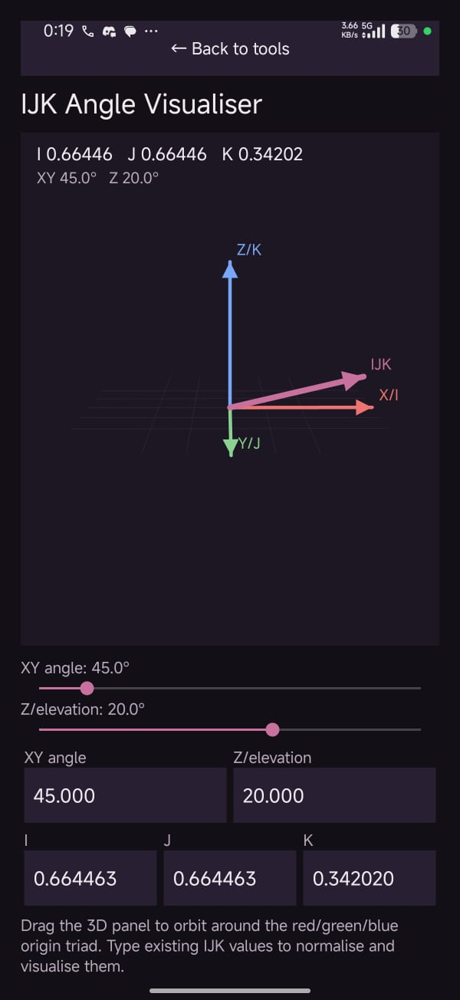
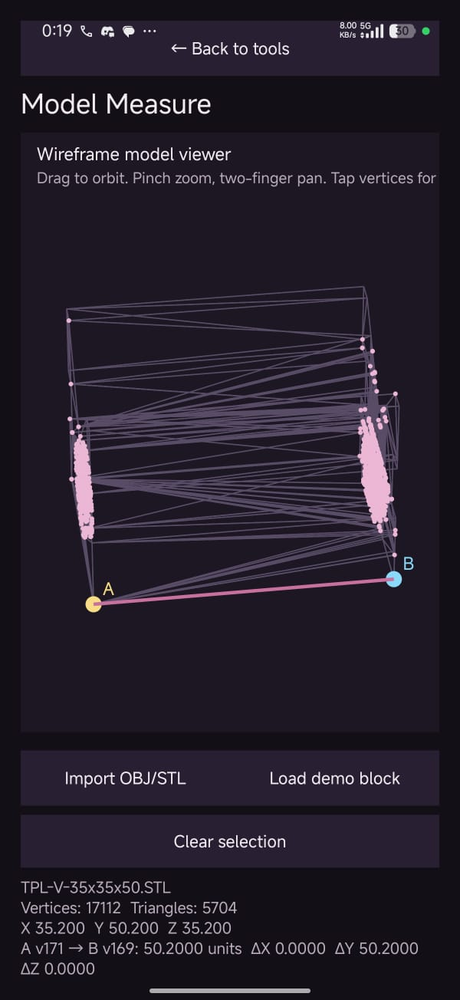
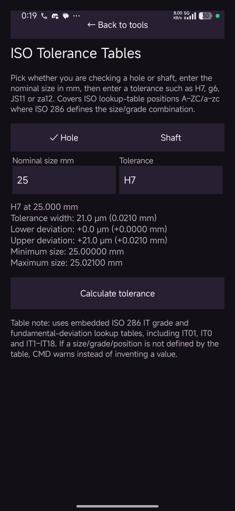
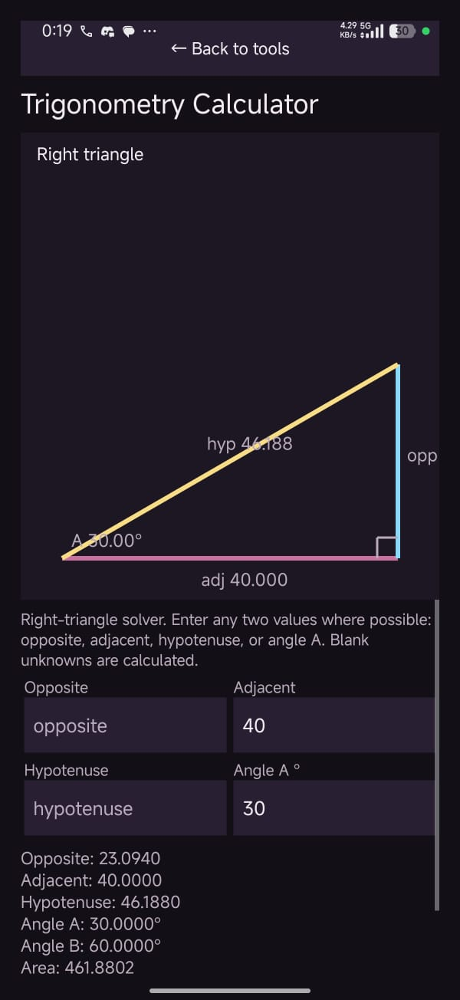
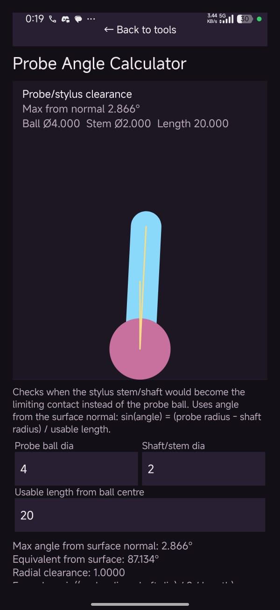

App development
I’ve had quite a lot of development work going on recently, so I thought it was probably time to put a few of the projects in one place and talk about what I’ve been building.
Some of these are already useful, some are still very rough, and a few are more about preserving old ideas before they disappear completely. Either way, they all come from the same place: I keep running into small annoyances, missing tools, or old bits of software that should exist in a better form, so I end up trying to build them.
Minecraft schematic studio
The first app I want to mention is something I’ve had the idea for quite some time, but never properly got around to building: an editor for Minecraft schematics.
The basic idea is that you can plan builds before having to build them in-game, then view them later layer by layer while recreating them in the world. I know Litematica already exists, but not for Bedrock, and that’s really where this started for me.
I wanted a way to design Minecraft builds on the go without needing to load up a creative world, grab a controller, and do everything inside the game. A layer by layer view also makes it much easier to recreate Litematica designs in Bedrock, especially when you’re working from something large or detailed.

The start screen lets you create a new design, load an existing one, or immediately import a .litematica file. Full Litematica support is something I really want for this app, partly because it allows Java players to import into the game, but also because there are already so many user-created designs out there. Being able to import those and view them layer by layer for recreation in Bedrock is a big part of the point.
There is one awkward issue though: textures.
Minecraft’s textures are owned by Microsoft, so the default textures in the app are just random generated ones. I’m pretty sure I used Python to generate them originally, but either way, I can’t include the real Minecraft textures by default. Microsoft would definitely not be happy about that.
What I can do is allow texture pack importing. So if you use a Java texture pack, you can import it yourself and the app will use those textures. Technically that means you can import the default pack, I just can’t provide it.
It also means you can import whatever texture pack you use in-game, so the designs in the app can match how your world actually looks.

You can switch between dark mode and light mode too, although I’m still not really sure why anyone would want to leave dark mode.

The block set was the one I regarded as current when I wrote this on 5 July 2026; I did not record the exact game version here. Check the project repository for current compatibility, releases, and issues.
There’s a hotbar at the bottom, and long pressing a slot lets you change the block, so you can customise it around whatever you’re building. Not all of the textures are perfect yet, but enough of it works now that the app is genuinely usable. You can import and edit Litematica files, build designs, and use the layer view to help recreate them.
I’ll keep adding features and improving the design workflow, but I’m really proud that this actually works. It’s one of those apps that came from a very specific personal annoyance, and now it’s something that makes my life easier.
The web and Android app is available here:
https://github.com/Wayner84/minecraft-schematic-studio-mobile
TesaTouch
TesaTouch is a legacy piece of optical inspection software from around the Windows 95/98 era.
It’s very dated now, and it lacks some basic construction features that you’d expect from this sort of software. Things like constructing a PCD from circles, intersecting lines to create points, and other simple geometry tools either aren’t there or aren’t implemented in the way you’d expect.
It’s not amazing software by modern standards, but that’s also kind of the point. It’s almost nowhere to be found online now. It’s completely obsolete, and it feels like the sort of thing that could easily be lost to time.
I hate that idea, honestly.
Software like this is part of the history of inspection and manufacturing. Even if it’s clunky, limited, or outdated, it still represents a stage in how these tools developed. I don’t just want to preserve the idea, I want to build on it and turn it into something genuinely useful on modern hardware.
For now, I’m mainly targeting Windows and Android.
The plan is to add the basic construction features that the old software lacks, which is a shame because I remember slightly later versions having more of this built in. But those versions were usually stuck on very old machines that had just survived from another era.
The Windows version will run from a connected camera, ideally a USB microscope, although any camera can technically be used. Measurement performance will depend on more than resolution or magnification: calibration, optics, lighting, geometry, stability, software, and validation against suitable references all matter. I have not established a general accuracy specification.
The idea is to make optical inspection accessible to more people. You shouldn’t need a massive investment just to measure something visually. A decent camera and some usable software should be enough for a lot of jobs.
At the moment, I don’t have a stage that can interact with the software, so measurement is limited to a single image. Longer term, I want to look at the possibility of designing an open source frame that people could either build themselves or buy. If that could integrate with the software and camera, it would open up stage movement, image stitching, and more serious inspection workflows.

This one still needs a lot more work. I also need to buy a microscope camera to properly test the Windows build. I’m looking forward to seeing what kind of accuracy I can get out of it and how reliable it ends up being.
If it works well, it could become a cheap alternative for people who need to measure parts that aren’t held to extreme tolerances, but still need something quicker and better than guessing with a ruler.
Coordinate Measuring Dreams (CMD)
Coordinate Measuring Dreams, or CMD, is the app I use at work and at home when I’m working on projects.
It’s basically a collection of tools that make my life easier. I haven’t finished it by any stretch, but there are already a decent number of functions in there, and it’s really useful having them all in one place where I can access them quickly.

IJK angle visualiser
I can calculate angles to IJK values manually, but it’s a pain.
When a drawing gives me the angle of a hole in degrees, I need to work out the IJK vector for the probe. Then I end up going back and forth between IJK values and degrees, which gets annoying very quickly.
This tool lets me type in IJK values or specify an angle in XY or Z. It then shows the angle in a 3D viewer, which makes it much easier to understand what’s actually going on.
It’s really handy for CMM inspection, and it speeds up specifying probe angles. The only one I ever really remember is 45 degrees being 0.7071, but that’s not enough when I’ve got 2.5 degree increments on the head.

Model measure
The model I’m given doesn’t always have a relevant dimension on the drawing to tell me where something is inspected from.
For example, a circle might be located from a Z height, but the drawing doesn’t actually give me the dimension I need. This tool lets me import a model, currently OBJ and STL, and select two points on it. It then gives me the distance between them.
It’s a simple tool, but having access to it on mobile is genuinely helpful.

ISO tolerance tables
I’m always having to look up tolerances.
Designers absolutely love putting limit and fit values on drawings instead of actual tolerances. I understand why, but it adds an extra step for me, and I don’t like extra steps.
So I made this.
You specify whether it’s a hole or shaft, then enter the limit and fit letter and number. The app gives you the upper and lower limits.
Nothing fancy, but it’s something I need nearly every day.

Trigonometry calculator
This one exists everywhere, I know.
But again, it helps having everything in one place. I don’t think this one needs much explaining. It’s a trig calculator, and sometimes that’s exactly what I need.

Probe shanking checker
This tool lets me enter the probe diameter, shaft diameter, and shaft length for the CMM probe I’m using. It then gives me a geometric estimate of the clearance angle before the shaft could reach the part.
This is especially useful when I need to get deep into a cylinder and I’m using a smaller ball. Rotation error can cause the shaft to touch the part the further in I go, so I use the result as a planning aid and still verify the real setup and clearance before running a measurement.
It’s a very niche tool, but it saves me calculating the angles and lengths manually and then doing the trig myself.
Just another tool that makes my life easier.

I do need to clean up the visualiser for this one, but I’ll get to it eventually.
That’s enough ranting for now
There’s a lot going on at the moment, both in software and with a few physical projects too. I’ll do another update on those soon.
For now, these are the main app development projects I’ve been working on: one for Minecraft builds, one for modernising old optical inspection ideas, and one that keeps slowly becoming my personal metrology toolbox.
None of them are finished, but they’re all useful in their own way already, and that’s usually the point where a project starts to feel worth continuing.